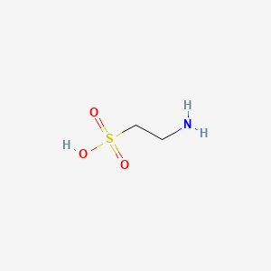
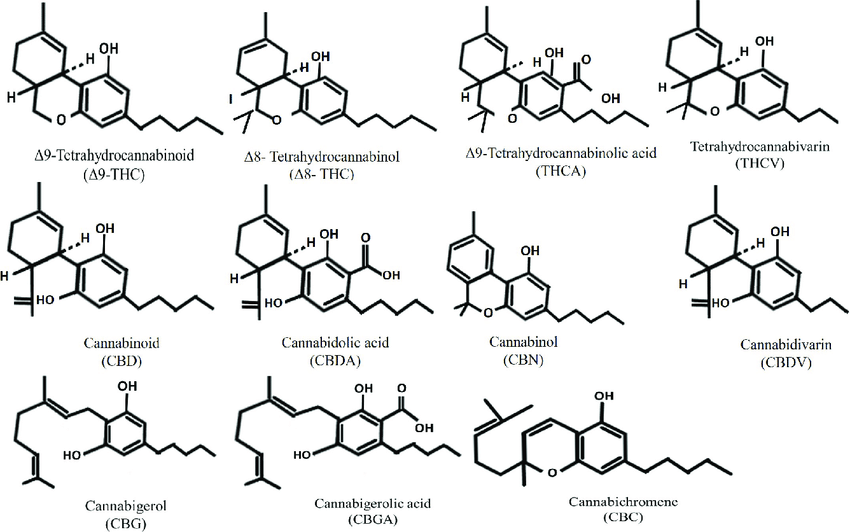
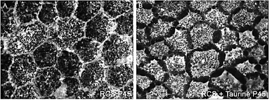
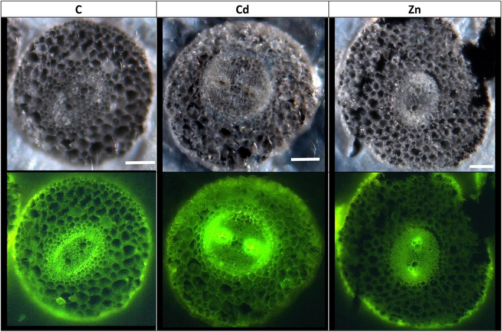
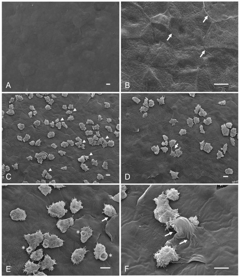
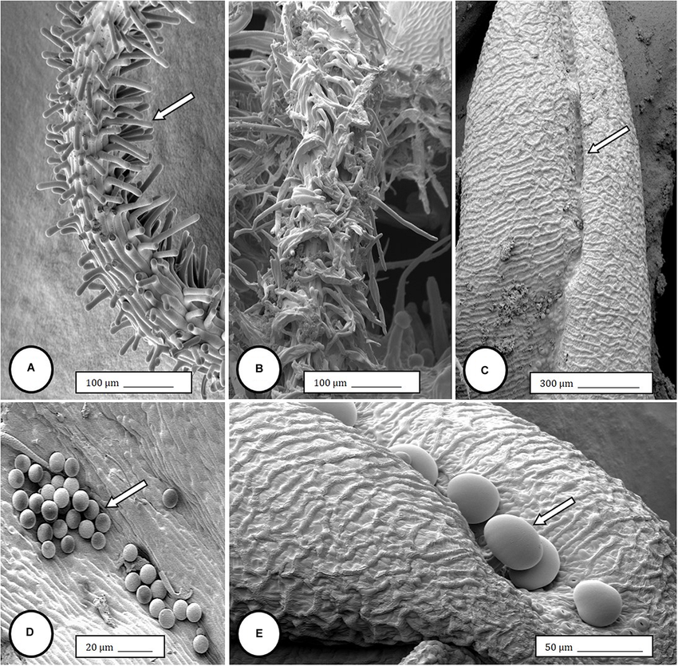

Speculative writing. This page is an open question, not a finding and not medical or nutritional advice. It does not recommend that anyone eat, take, or stop taking anything.
Could the taurine found in the body be related to compounds in hemp (Cannabis sativa), such that taurine is a breakdown product of plant material? I started from a visual impression: some structures in taurine and cannabis images looked alike. This page sets out that impression, then checks it against what is already known, then asks what test could settle it.


What I first noticed: both are built from carbon, hydrogen and oxygen, and I read the single sulfur and nitrogen in taurine as possible leftovers of digestion.
What the formulas actually show: taurine (2-aminoethanesulfonic acid, C2H7NO3S) is a small molecule with a sulfonic acid group and an amine. The main cannabinoids (for example CBD and THC, C21H30O2) are larger molecules with no nitrogen and no sulfur. Sharing carbon, hydrogen and oxygen is true of nearly all organic molecules, so it does not point to a relationship. A derivation would also have to explain how nitrogen and sulfur are added.




What I first noticed: pentagonal shapes and feathery fragments that looked similar.
Limits of this comparison: each of these images comes from a different study, at a different scale, with different sample preparation, and several show tissue (roots, flower parts) while the other shows something labeled taurine. Visual resemblance between images from unrelated experiments is not evidence of a shared origin. To check the resemblance honestly I would first need to confirm what each original paper says its image shows.
Because of this, the hypothesis as first stated is not supported. It stays here as a record of the question and how it was tested on paper.
A narrower, testable question: do plant-derived nutrients influence taurine levels in the body, and by what route?
This would need a laboratory, ethics review where animals or people are involved, and a trained mentor, which is one reason I am studying microbiology and cell science.
← Navigation